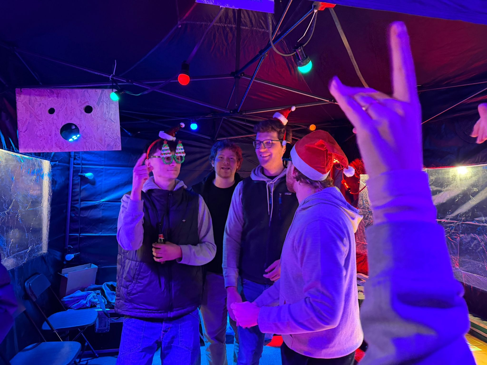

Kidsday
Op 25 mei 2026 beleven we tijdens een feestdag een toffe dag met kinderen die opgroeien in kwetsbare omstandigheden.

Events
Onze events zijn laagdrempelig, sociaal en doelgericht. De opbrengst gaat naar projecten die passen bij onze club en regio.
Opkomend
Op 25 mei 2026 beleven we tijdens een feestdag een toffe dag met kinderen die opgroeien in kwetsbare omstandigheden.

Op 16 augustus 2026 organiseren we vanaf 19u een openluchtcinema in de Dekenijtuin in Lennik.
Bekijk event
Op 6 september 2026 organiseren we een rally voor oldtimers en GT-wagens. Een dag voor autoliefhebbers, ontmoeting en onze clubwerking.
Bekijk eventAfgelopen

Voor de jaarlijkse Rotary-bijeenkomst zorgden leden voor een veilige en praktische taxiservice.

Een actie uit najaar 2025.

Een warme stand met sfeer, ontmoeting en clubleden die samen de handen uit de mouwen steken.